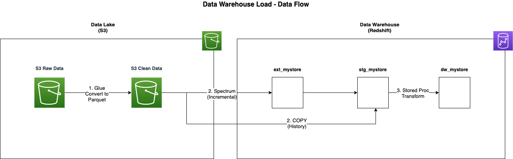
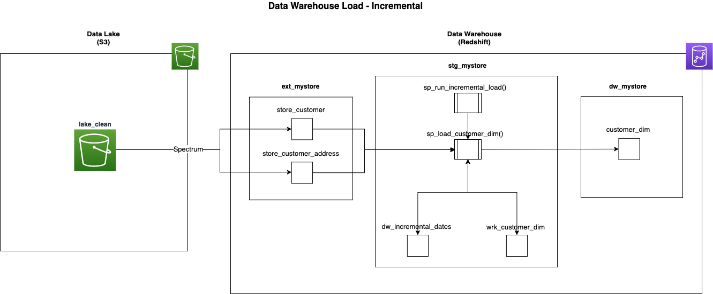
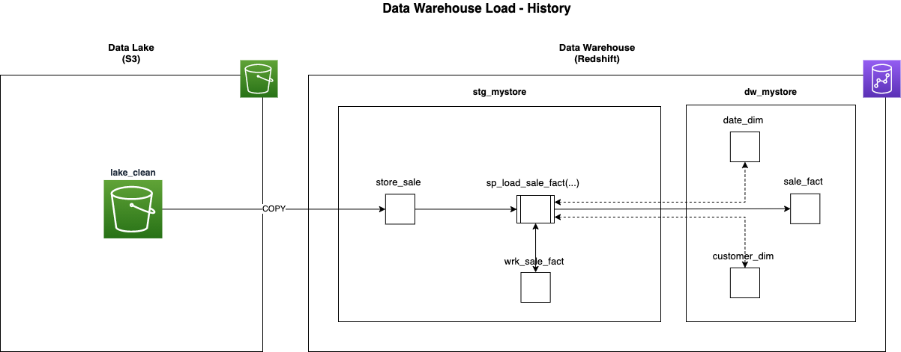

Data Warehouse Data Loading
Data Pipeline¶
The data warehouse implements an ELT strategy to ingest data from the data lake. The ELT strategy consists of loading prepared data from the Clean layer of the data lake into the data warehouse and then transforming it into a specific data model optimized for the business queries.
The following steps outline the data pipeline from the data lake into the data warehouse:

- AWS Glue Workflow reads CSV files from the Raw layer of the data lake and writes them to the Clean layer as Parquet files.
- Stored procedures in Amazon Redshift’s
stg_mystoreschema extract data from the Clean layer of the data lake using Amazon Redshift Spectrum via theext_mystoreexternal schema imported from the AWS Glue Data Catalog for incremental loads, or the COPY command for history loads. - The stored procedures then transform and load the data into a star schema model in the
dw_mystoreschema.
Incremental Loads¶
This diagram describes the process flow for the incremental load of the customer_dim dimension table.

- The incremental load process is initiated by calling the stored procedure
sp_run_incremental_load. In production,sp_run_incremental_loadis called every 30 mins by the Amazon Redshift Data API via an AWS Step Function. No parameters are required for this procedure. The procedure loads each target star schema table in series, dimensions first then facts. The following steps explain the loading of thecustomer_dimdimension. sp_run_incremental_loadcalls thesp_load_customer_dimstored procedure.sp_load_customer_dimselects a high watermark timestamp from thedw_incremental_datestable for each of the customer_dim’s source tables. A high watermark is a timestamp that records the maximum date and time of the data from the previous load. This is used as a start date for the next load, ensuring only new or changed data is processed.sp_load_customer_dimselects data from tables in theext_mystoreexternal schema, external tables return data from the data lake via Amazon Redshift Spectrum. This procedure then transforms and loads the data into thewrk_customer_dimworking table. A working table is a normal table used to temporarily hold data to be processed and is cleared out at the beginning of every load. An Amazon Redshift TEMPORARY table could be used for this purpose; however, to facilitate debugging, a standard table has been used with the BACKUP NO setting to prevent the data from being copied to snapshots.sp_load_customer_dimperforms slowly changing dimension (SCD) type 1 and 2 logic loading into the target dimensioncustomer_dim. The type of load into the target will be different depending on what kind of dimensional object is being loaded. SCD type 1 dimensions and fact tables are merged into by replacing existing rows in the target. Dimensions with SCD type 2 fields are loaded using multi-step logic. Surrogate keys are assigned to new dimension records by an IDENTITY column in the target table.
History Loads¶
This diagram describes the process flow for the history load of the sale_fact table. History loads for other fact tables
use a similar process.

- The history load process for the sale_fact table is initiated by calling the stored procedure
sp_load_sale_fact. This is a manual process run by an administrator via a SQL client tool when needed. The parametersp_load_type VARCHAR,p_start_date DATEandp_end_date DATEare required for this procedure.p_load_typeneeds to be set to'HISTORY',p_start_dateandp_end_dateneeds to be set to the date range to be loaded. sp_load_sale_factloops through the given date range and loads thestore_salestaging table one day at a time with the COPY command. The procedure then selects data from the staging table, applies transformations, looks up surrogate keys from dimension tables in thedw_mystoreschema, and loads the data into thewrk_sale_factworking table. The surrogate key lookups are performed by joining to dimension tables on the source system natural keys and returning the surrogate primary keys from the dimensions.sp_load_sale_factmerges data from the working table into the target fact table. The merge is performed by joining the working table to the fact table, deleting rows out of the fact that exist in the working table, and then inserting all rows from the working table into the fact. This is all performed inside a transaction, so if any step fails, the whole change is rolled back. This merge process is explained in depth in the Redshift Database Developer Guide.